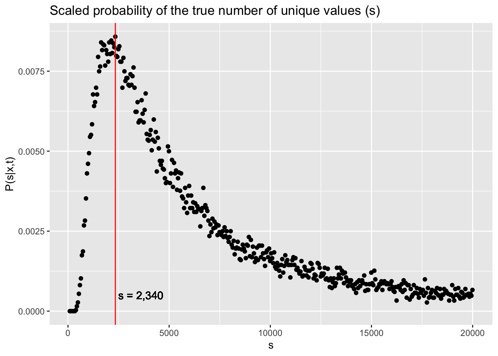
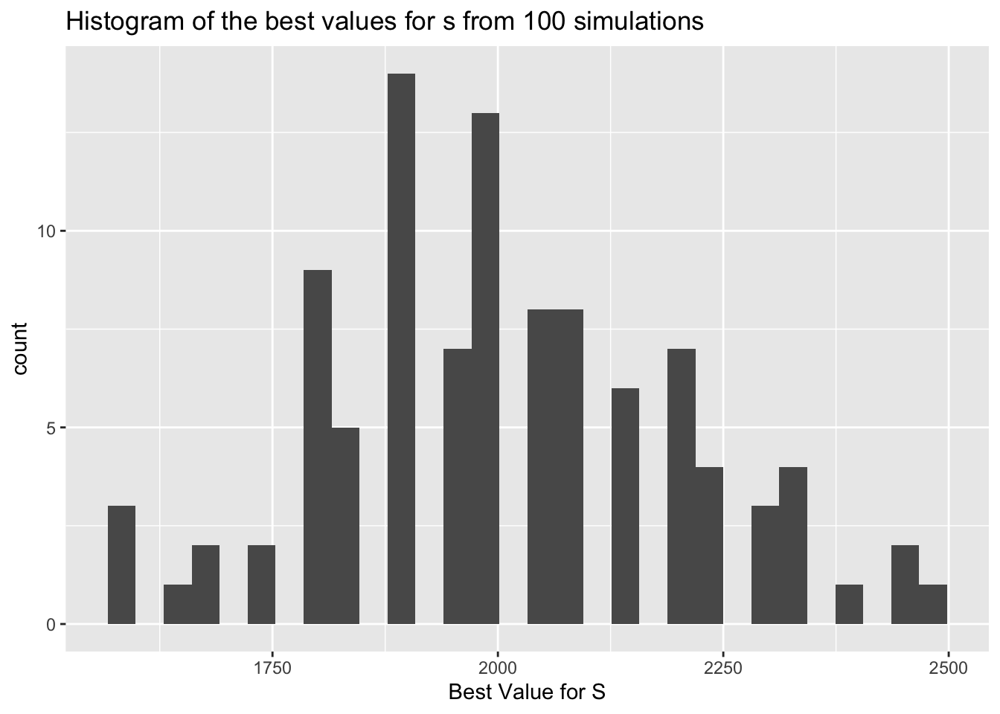
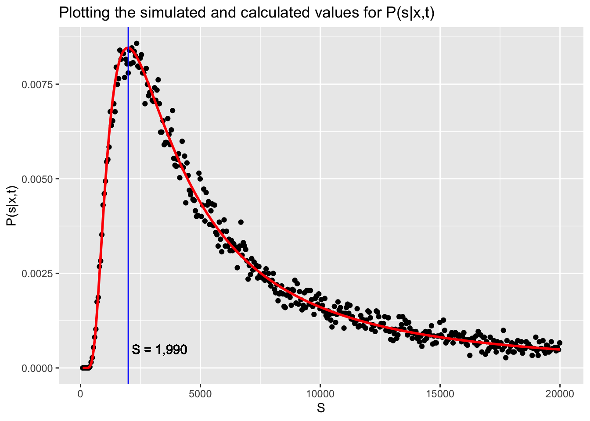
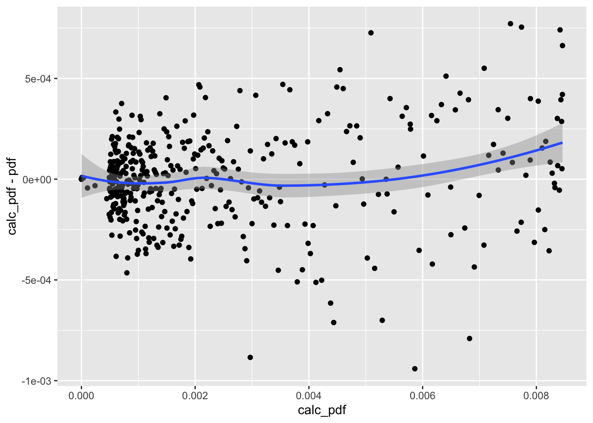
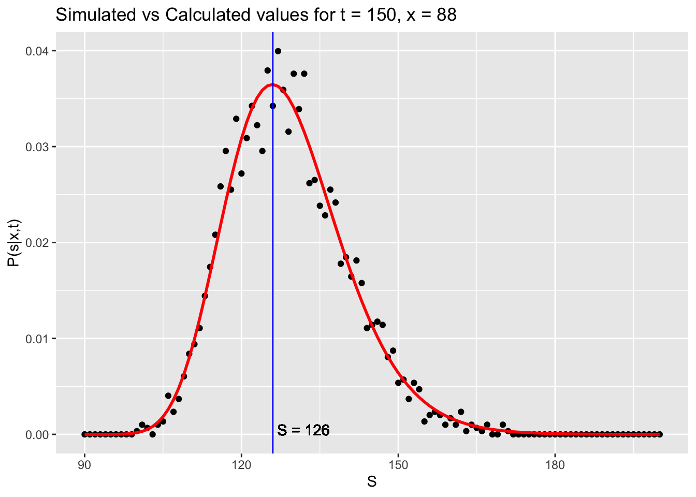
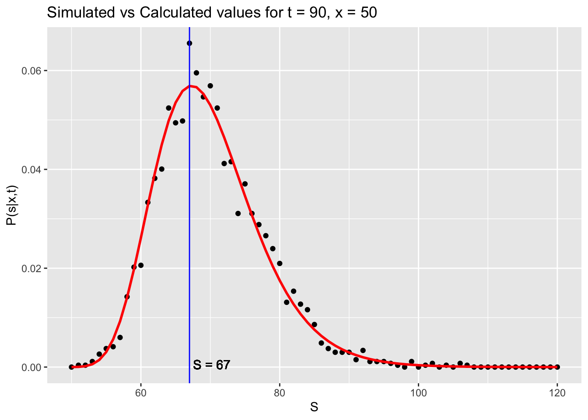

Motivation
A friend asked me to help him figure out some probabilities related to microwell plates that he was analyzing in his lab. A 90 well plate was filled from a mixed sample of an unknown number of unique particles. Let’s say there are a total of s total particles in the original sample. My friend said that he observed 88 unique particles in the 90 well plate. His question was simple: can we estimate the number of unique particles (s) in the original bag?
We can write this a little more succinctly:
If we draw 90 items from a set (with replacement) and we see 88 unique items, what is the probability that the set has s unique members? Can we calculate \(P(s|x,t)\) where x is the unique items observed out of a draw size t.
Simulation
Let’s get an idea of what the solution should look like by running a simulation. The example below will test various S values between 90 and 30,000 with 1,000 simulations per S size. For each size, we try to find the probability of drawing exactly 88 unique samples.
simXgS <- function(s, t = 90, x = 88, num_samples = 1000) {
# Calculates the probability of drawing x unique samples
out <- c()
for (i in 1:num_samples) {
samp <- sample(1:s, size = t, replace = T) # draw 90
v <- (length(unique(samp)) == x)
out <- c(out, v)
}
mean(out)
}
set.seed(1)
bag <- seq(from = 90, to = 20000, by = 50) # S Values
full_out <- sapply(bag,
simXgS,
t = 90,
x = 88,
num_samples = 1000)
p_full_out <- full_out / sum(full_out)
df_sim <-
data.frame(S = bag, pdf = p_full_out)
best_S <- df_sim$S[which.max(df_sim$pdf)]Some of you may have made the correct observation that we are actually calculating \(P(x|s,t)\). That is what full_out represents. However, as you will see below, we can use Bayes Rule to show that this is valid when we scale by the sum of all values (p_full_out). In other words: \[ P(s|x,t) = \frac{P(x|s,t)}{\sum_s{P(x|s,t)}}\]
The graph below shows the scaled probability of the true number of unique values in the original sample. The labeled vertical line shows the best guess for the value of s based off the simulations.

We can even run the simulation multiple times (code not shown) to get a better estimate of s. After 100 simulations, the best s is 2006 (95% CI [1968, 2045]). The plot below shows the distribution of these values.

Analytic Solution
Now let’s see if we can calculate \(P(s|x,t)\) without using simulation. We can start with Bayes Rule: \[ P(s|x,t) = \frac{P(x|s,t)P(s|t)}{P(x|t)}\] We can calculate the formula for \(P(x|s,t)\) by using combinatorics: \[ P(x|s,t) \propto \frac{s!}{s^{x}(s-x)!}*\frac{\binom{t-1}{t-x}}{s^{t-x}}\]
Note the ‘proportional’ sign that’s used instead of an ‘equal’ sign. I will show why this is not important shortly. Let’s look at \(P(s|t)\). First we notice that s is entirely independent of t. (I can use a plate of any size for testing, it probably relates to the capabilities of the device measuring the wells, not s). Additionally, we can give s a uniform distribution; It’s equally likely to be any number in the range we are testing.
\[ P(s|t) = P(s) = \frac{1}{q}\]
Where q equals the whole range we are testing s over (length(bag)).
Lastly we turn to \(P(x|t)\), which is the marginal distribution of x over all of the possible values of s.
\[\begin{aligned}P(x|t) &= \int_s{P(x|s,t)P(s|t)ds} \\\\ & = \int_s{P(x|s,t)\frac{1}{q}ds} \\\\ & = \frac{1}{q}\int_s{P(x|s,t)ds} \\\\\ & = \frac{1}{q}\sum_s{P(x|s,t)} \end{aligned} \] Now let’s put it all together: \[\begin{aligned} P(s|x,t) &= \frac{P(x|s,t)P(s|t)}{P(x|t)} \\\\ \\ &= \frac{P(x|s,t)\frac{1}{q}}{\frac{1}{q}\sum_s{P(x|s,t)}}\\\\ \\ & = \frac{P(x|s,t)}{\sum_s{P(x|s,t)}} \end{aligned} \] This result accomplished two goals:
It justifies dividing by the sum of all the probabilities (as we did in the first section).
It means that our analytic solution to \(P(x|s,t)\) can be proportional to the true value (as long as it does not contain an s). Any proportions like that will act as the \(\frac{1}{q}\) did and get cancelled out.
Below I’ve written a function for calculating \(P(x|s,t)\) where t = plates and x = observed_unique.
probXgS <- function(s,
t = 90,
x = 88) {
m_vs <- t - x
prod(s:(s - (x - 1)) / s) *
choose(x + m_vs - 1, m_vs) *
1 / s ^ m_vs
}
comp_out <- sapply(bag, probXgS, x = 88, t = 90)
p_comp_out <- comp_out / sum(comp_out)
df_sim$calc_pdf <- p_comp_out
best_S_calc <-
df_sim$S[which.max(df_sim$calc_pdf)]The graphs show that the analytic solution (red) correctly approximates the probability distribution of the simulation. The most likely value for \(s\) is also shown.

Lastly, we can look at the performance to the simulation more directly by plotting the residuals:

The residuals are fairly constant for all calculated values. There is naturally bunching near 0 because of chosen values for s.
Conclusion
This post shows my method for solving these sort of problems. Doing simulations like I showed in the first part really makes the problem, and statistics, come alive. Once I have a good understanding of the actual problem, I like to think of an analytic solution that can be generalized to other forms of the same problem. Below I show some example where the number of plates and the unique observations differs from those of the original problem. You can also fine all the code for this blog post on my GitHub.

